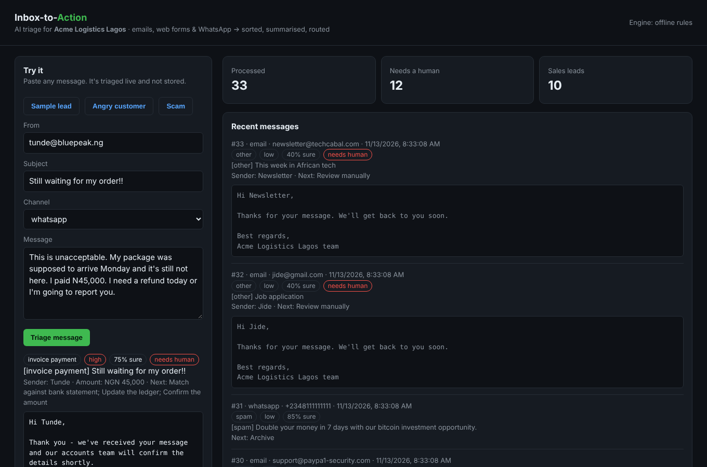

Inbox-to-Action
A busy small business can get a hundred messages a day across email, its website and WhatsApp, and someone spends hours just sorting them. Inbox-to-Action reads each message, decides whether it's a lead, a support issue, a payment or spam, pulls out who sent it, how urgent it is and any amount in naira, then drafts a reply and alerts the team.
- The AI (Claude, or free Groq and Gemini models) has to answer in a fixed JSON shape, so its output never breaks the rest of the system
- If the AI service fails, a rules-based backup answers instead and the workflow keeps running
- 37 automated tests, and 96% accuracy on a labelled set of 24 real-world-style messages
- Runs in Docker with automatic checks on every push, and plugs into n8n, Google Sheets and Gmail
- Python
- FastAPI
- Claude API
- Groq
- n8n
- SQLite
- Docker
- GitHub Actions
